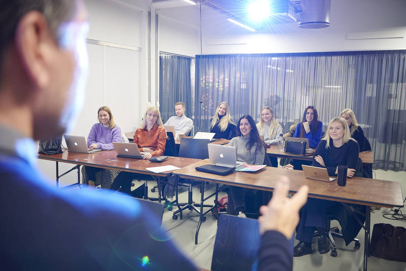

Copenhagen School of Design and Technology (KEA) offers practice-oriented, higher education developed in close cooperation with the business community and educational institutions in Denmark and abroad.


The AP in Computer Science programme teaches you about databases and their structure. You will gain a foundation in information technology, and learn to develop, refine and maintain IT systems. On the programme, you will learn to design and develop programs and apps in collaboration with others, and you will also learn about programming, needs analysis and business understanding.
General programming is taught based on syntax, programming method and program design, from a beginner’s level. You will learn to program in the following languages: Java and Javascript. You can choose other coding languages as electives.
Teaching in this area focuses on systems development theory and method, from pre-analysis to testing systems. Iterative methods, such as Scrum, are primarily taught.
Drawing on organisational theory, you will learn to analyse organisational contexts you can use in systems development and in relation to implementing new systems in organisations.
You will learn about computers down to component level, and up into the cloud, so that you understand the processes running on computers that can affect your systems development process and programming.
Examples of elective subjects include programming mobile devices, web programming, Security and Artificial Intelligence.
A 10-week internship takes place in a relevant business in which you can try out what you have learned in the course of study.
The study programme concludes with a project where you specialise within a given topic. The project follows on from the internship, which often provides the basis for the final project.
On the software development top-up programme you will learn how to develop and manage large distributed data-intensive systems. You will work with all the various aspects of software development, such as databases, contracts, testing, systems integration, project management and systems development.
Database types, database optimisation, administrative tools, transactions, security. In the module you will learn to choose and use the correct database solutions for various tasks. In addition, you will also analyse and work with large databases and tasks, such as redesign and operations optimization.
Test strategies, types, models, verification, validation, contracts. In the module you will learn to plan, carry out tests, and integrate tests in strategies, development processes and quality assurance.
Development of Large Systems
Management techniques, quality systems, distributed development, patterns and frameworks. In the module you will learn how to plan and manage development processes with many project participants. You will also learn how to design and implement large systems that consist of small parts from independent development groups.
Data conversion, migration, standards, SOA - service-oriented architecture. In the module you will learn to integrate existing systems and integrate existing systems in connection with the development of new systems. You also learn to develop new systems that support integration in the future.
In addition to the obligatory part of the programme, there are two elective subjects in which you can specialise in, for example, Project Management.
You enter into a 2 months internship in a business either in Denmark or abroad. Your internship advisor at KEA will help you with any practical questions concerning your internship with a host company which you must find yourself.
For the final examination project you write a report within one of the subjects in the programme.
main_temp
main_temp
main_temp
placeholder_main
placeholder_main
placeholder_main
placeholder_main
placeholder_main
placeholder_main
placeholder_main
placeholder_main
placeholder_main